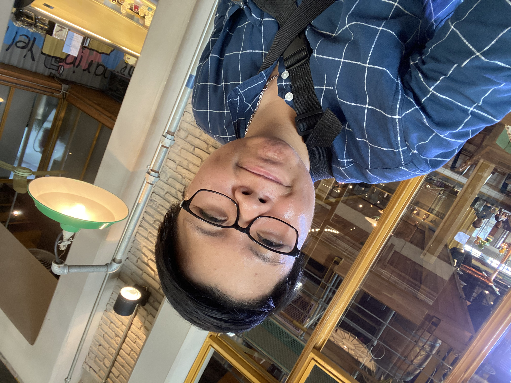

About Me
MY name is Narunkorn Viboonkitarpakul Nickname New.I was born on 27 December 1989 in Thailand. I am a shy person and seriously working time. I like nature tourism like mountains.When I have free time I like playing games.I'm not very good at talking but when someone has a problem, they often come to consult me. Because I'm a good listener.
You can contact me at 69/558 Chapter One Modern Duch Rat Burana 33,Rat Burana Bangkok. 10140 Tel 080-240-3152

Education
2006-2008
Chetupon Commercial College. Vocational Certificate of Business Computer2009-2013
Bansomdejchaopraya Rajabhat University. Bachelor of Science Computer Technology (Animation And Mulimedia)
Experience
2013-2014
Comedy-corporation Co.,LTD. Position Editor.Editing Tarok Borupoke and SHe Show Scene.On-air on Chernyim Tv Chanal Freelancer Editing Kroo Tom Son-Thai On-air on New Tv Chanal2014-2020
Express Entertainment Co.,LTD. Position Editor And Graphic. Editing Sai Trong Luke Tung Show On-air on PPTV and ThaiRut Chanal. Editing Ban Terng Luke Tung On-air on 3SD 28 Chanal Editing Luke Tung Tua Jing Show On-air on GMM 25 Chanal2020
Freelancer Editing Roo Mai Kai Sod 2020 On-air on ONE31 Tv Chanel

Skills